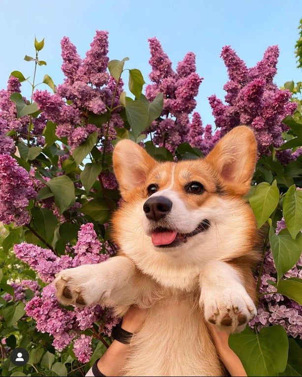
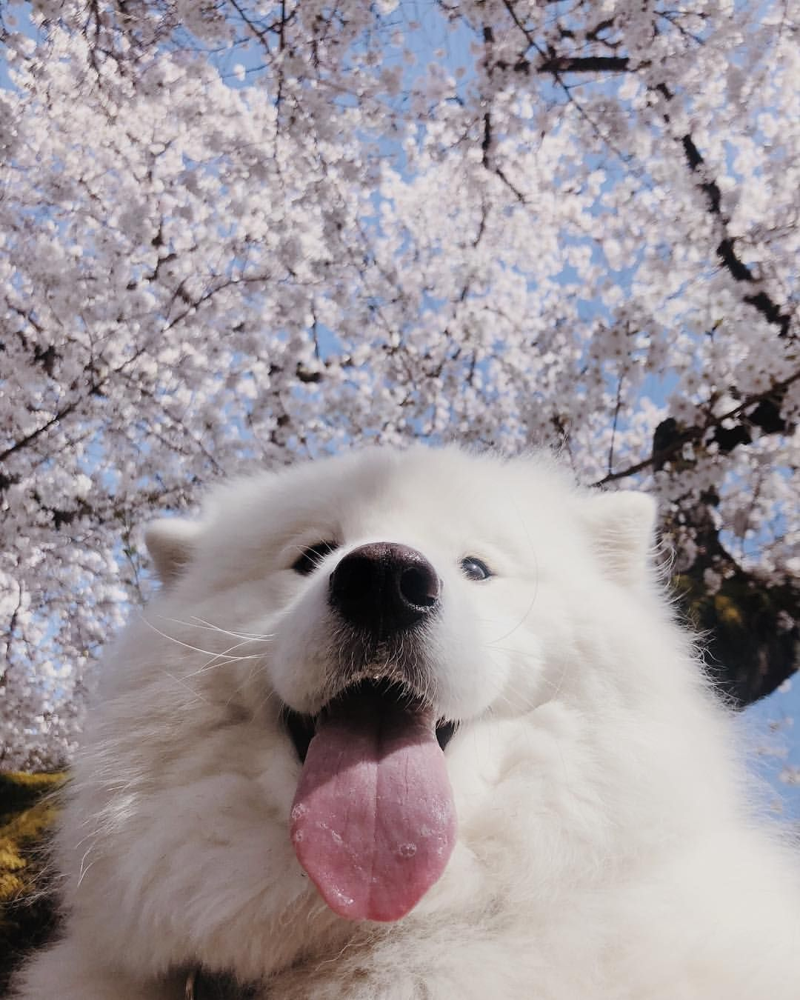
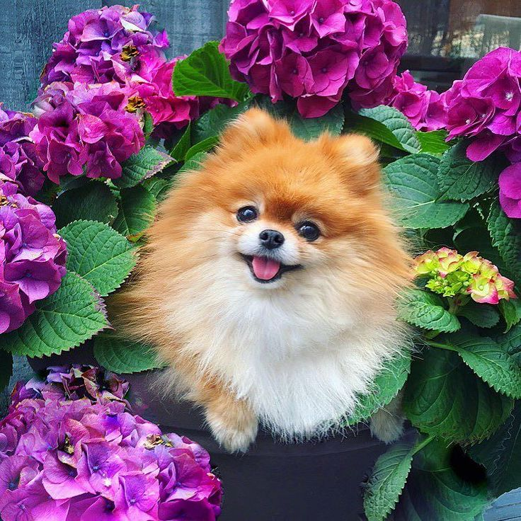
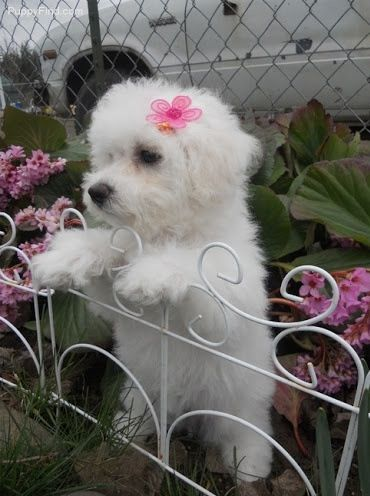
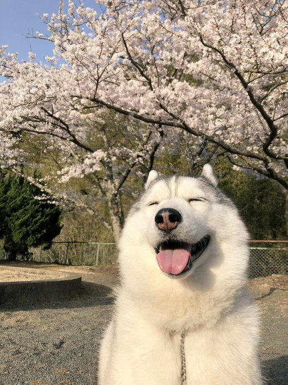
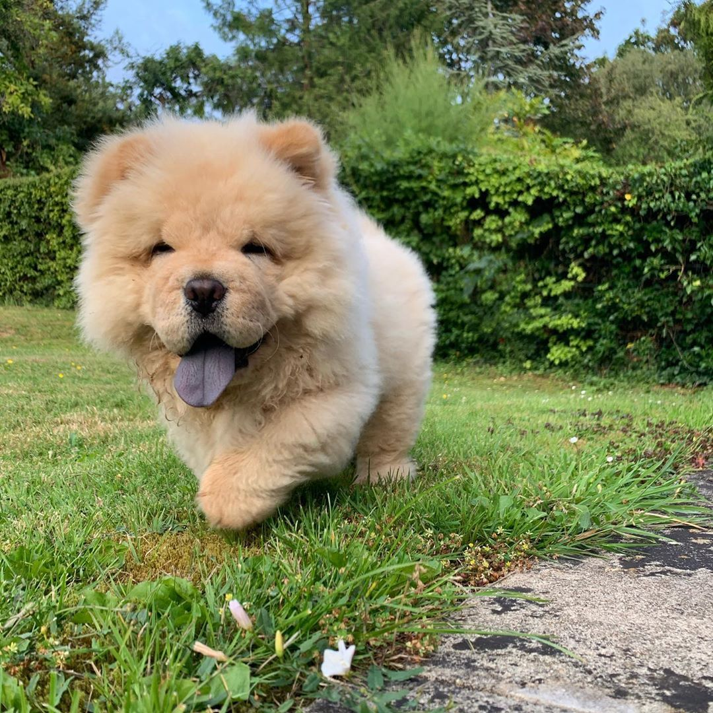

Dog Breeds₍ᐢ. .ᐢ₎
|
|  |
ִֶָ 𓂃⊹ ִֶָCorgi 𓂃⊹ ִֶָ |
──★ ˙ ̟Corgi's are a very cute breed with short legs and cute bums. They are playful, smart, fun, & outgoing. Some Corgi's are born without a tail, did you know? Queen Elizabeth love corgis and owned more than 30 Corgis. |
|
|  |
ִֶָ 𓂃⊹ ִֶָSamoyed 𓂃⊹ ִֶָ |
──★ ˙ ̟Big fluffy snowball dogs. They're a good dog for families and around kids, and loyal with their owners. Samoyed dogs don't really smell, You can give them a bath once a year and they would usually never smell. |
|
|  |
ִֶָ 𓂃⊹ ִֶָPomeranian 𓂃⊹ ִֶָ |
──★ ˙ ̟Pomeranians are cute small dogs and they are easy to train and intelligent. They love their owners and very fluffy too. There's a white pomeranian aswell. |
|
|  |
ִֶָ 𓂃⊹ ִֶָBichon Frisé 𓂃⊹ ִֶָ |
──★ ˙ ̟Bichon's are clingy cute doggos and they love to snuggle with their owners. They are difficult to teach potty training, And gentle but playful too! |
|
|  |
ִֶָ 𓂃⊹ ִִֶֶָָ 𓂃⊹ ִֶָSiberian Husky 𓂃⊹ ִֶָ |
──★ ˙ ̟Huskies are big fluffy doggos, i have one of them and his name is batman! They might look very aggressive sometimes but they are loving and caring around people. |
|
|  |
ִֶָ 𓂃⊹ ִִֶֶָָ 𓂃⊹ ִֶָChow-Chow 𓂃⊹ ִֶָ |
──★ ˙Chow-Chows are aggressive when they play but fun and loving with their owners. They're big fluff and chubby, with cute tails.
|
Reference Corgi
Reference Samoyed
Reference Pomeranian
Reference Bichon Frise
Reference Siberian Husky
Reference Chow-Chow